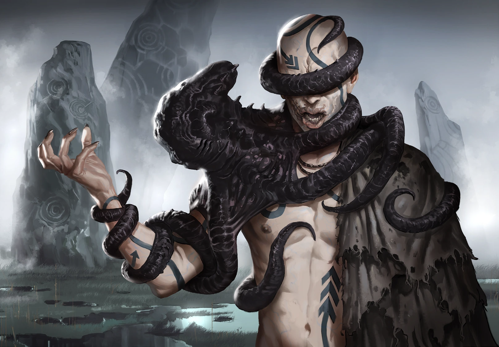

Dushani perceive and reshape the world through sound. Wind, water, stone, animal calls, and their own subvocal voices become parts of a vast sound carpet. Their harmonics can shatter matter, manipulate perception, and reach the archaic structures of the human mind.
Focus
Even without Rapture, language remains central. De-spored Dushani speak a primal tongue that listeners understand instinctively even when they cannot reproduce its sounds.
Symbiosis
Their plague is drawn from dark water, caves, forests, and night air: Bog Krakens, jellyfish, crabs, bats, and other creatures whose signals reinforce the Dushani song.
DOMINANT ATTRIBUTEInstinct
EARTH CHAKRAUsud Crater, Balkhan
PLAGUEBog Krakens · jellyfish · crabs · bats
KNOWN PHENOMENA
Rapture Discharges
LEVEL 1
Lord of the Second Plague
Calls strange animals whose voices reinforce Dushani Phenomena, up to a powerful activation bonus.
LEVEL 4
Echolocation
Maps surroundings by sound and cancels poor-visibility penalties according to Overload.
LEVEL 5
Speaking in Tongues
Uses primal language to seize control of a listener who fails to resist.
LEVEL 5
Resonance
Turns a victim’s own thoughts into an escalating feedback loop that damages Ego.
LEVEL 6
Tongues of Babel
Breaks communication among everyone in earshot, reducing speech to mutually unintelligible gibberish.
LEVEL 7
Wave Crest
Several Dushani can build a standing wave whose growing area tears organic tissue apart.
LEVEL 10
Foul Seed
Plants an order, emotion, or alien belief in the subconscious to emerge over the following weeks.
LEVEL 16
Mountain Slide
Uses catastrophic resonance to collapse a mountainside, a desperate discharge that destroys other Dushani songs nearby.

DUSHANIThe Voice of Decay
VARIANTS
Known Forms
VARIANT: VODJANOI
Vodjanoi
Territorial water-dwellers that drown intruders and amplify Mokosch songs from caves and riverbanks.
PROFILE: VODJANOI
INITIATIVE: 6D / 2 Ego Points
SPORE INFESTATION: 18/18
SPECIALTY: Swarm Strength 2 (+4D to Phenomenon activation)
ATTACK: Embrace, 8D, special: The Dushani embraces his victim and jumps into a body of water with them. Rules for drowning apply. The victim counters with BOD+Force or AGI+Mobility.
DEFENSE: Passive 1
Melee active -
Ranged Combat active -
Mental 2D (No effect in Primal phase)
MOVEMENT: 5D
ARMOR: Amplifier mask (+1D to Phenomenon activation), Armor 1
CONDITION: 12 (Trauma: 6)
SPECIAL DEFENSE: Ink Cloud
The Vodjanoi emits a dark violet aerosol from the hoses of their mask. The inky gas clings to him for seconds, swirling with every movement. His Passive Defense rises by (4) until their next Action. Activating the Ink Cloud does not require an Action. The Ink Cloud can be used up to (4) times.
VARIANT: LESNJE
Lesnje
Wandering “whispers of the woods” that hunt disruptions in the sound matrix, including humans and misaligned Dushani.
Powerful singers that find natural resonators, reshape caves and passes, and become fixed nodes in the vast Dushani sound network.
PROFILE: MOKOSCH
INITIATIVE: 7D / 4 Ego Points
SPORE INFESTATION: 28/28
SPECIALTY: Swarm Strength 4 (+8D to Phenomenon activation)
ATTACK: Only uses Phenomena
DEFENSE: Passive 2 (Erratic movements)
Melee active -
Ranged Combat active -
Mental 3D (No effect in Primal phase)
MOVEMENT: 6D
ARMOR: Mokosch mask (rises above the torso, hoses are like a curtain, +2D to Phenomenon activation), Armor 4
CONDITION: 16 (Trauma: 8)
SPECIAL DEFENSE: Ink cloud, see Vodjanoi
ALLIES: Several Lesnje are close by and protect the Mokosch.